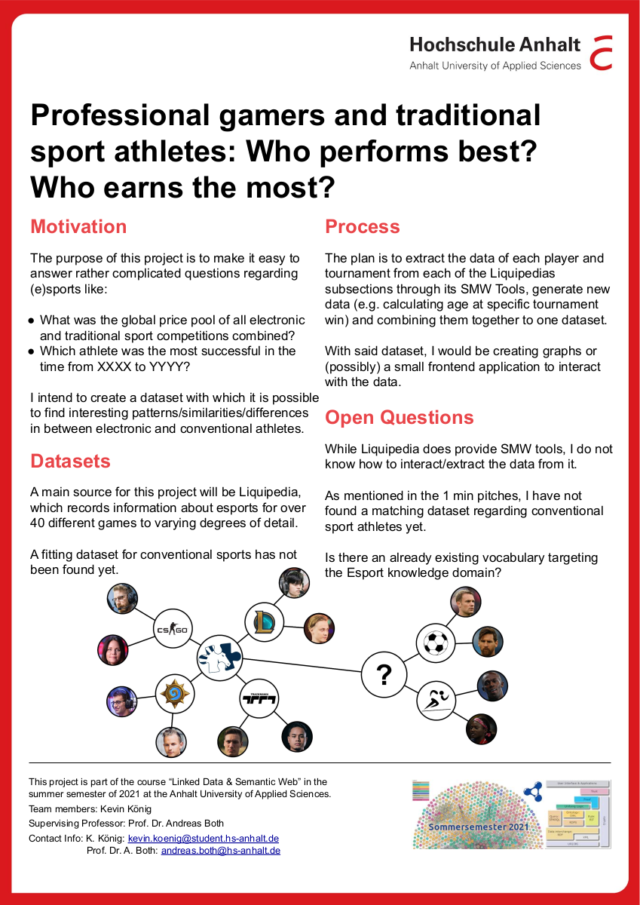

Kevin König
Sinn dieses Projekts ist es, einen Datensatz zu erstellen, mit dem Sportler aus elektronischen und konventionellen Sportarten miteinander verglichen werden können.
This project is about creating a dataset, with which athletes from electronic and conventional sports can be compared with one another.
